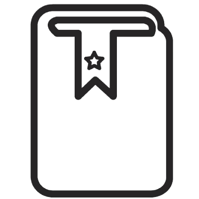

Adoptar animales salva vidas, reduce costos y promueve la responsabilidad. Es una opción amorosa y responsable que combate el maltrato animal. La importancia de la adopción.

Es un lazo de amor, que nos hace más fuertes y más reales. Con cariño y respeto, podemos fortalecer,este vínculo tan especial, que nos llena de alegria. La conexión entre los humanos y los animales.
La educación animal, en la escuela es clave, Para enseñar respeto, compasión y amor que se siente. Aprender sobre los animales, su cuidado y su bien, Es fundamental para el futuro. La educación animal en la escuela.

Contáctanos


Sigue nuestras redes sociales para mantenerte al tanto de nuestras últimas noticias, eventos y campañas de concentización del bienestar animal.